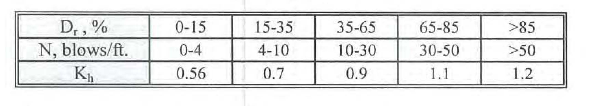

| Qu = | Qe + Qf - wp | Ultimate bearing capacity, kN |
| Qa = | Qe/SFe + Qf/SFf - wp | Allowable bearing capacity, kN |
| Qe= | qe Ap | Bearing capacity for Pile tips, kN |
| qe = | 240 x [ 15 + 0.5 ( Ntip - 15 )] | - For Sand |
| 9 C | - For Clay | |
| Qf= | Σ fr Lf φ | Friction capacity for Pile tips, kN |
| fr= | Kh q tan( 3/4 Φ ); | - For Sand |
| C α | - For Clay | |
| wp= | Ap x L x 24 kN/m3 | weight of pile, kN |
| Ntip, Nf | SPT N-value for pile tips, friction, -- ( N < 60, Nf < 30 ) | |
| Ap, φ: | Area & perimeter of the pile, m2, m | |
| L; | Pile length, m | |
| Lf | Considering pile length as friction for sand and clay, m | |
| K: | Ratio of horizontal to vertical earth pressure on side of pile | |
| q: | Effective Overburden pressure, kN/m2 | |
| Φ: | = 0.3 N + 27 | Friction Angle, deg. |
| C: | = 0.5 qu | Cohesion, kN/m2 (< 100 kN/m2) |
| qu; | = 12.5 Nc | Undisturbed shear strength, kN/m2 (< 200 kN/m2) |
| α | Reduction factor depending on cohesion |
